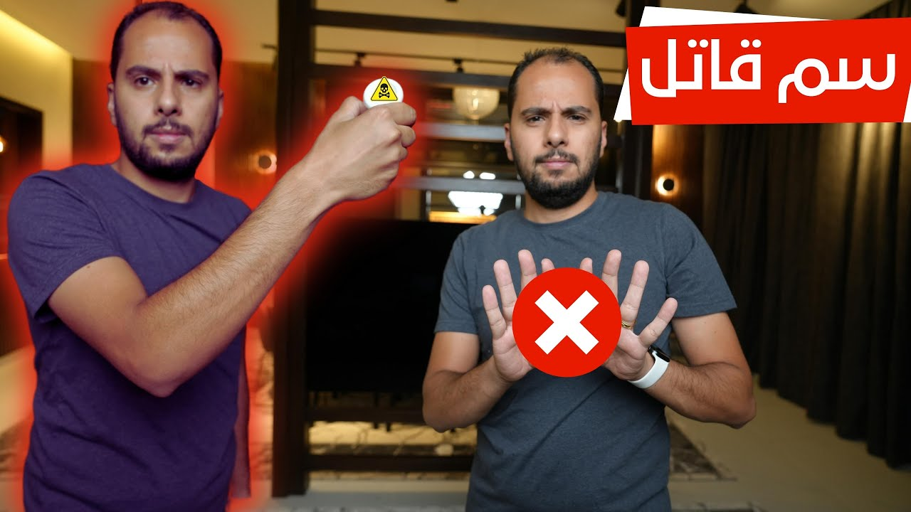

علاقات
سم العلاقات - كيف تكتشف العلاقات السامة وتتعامل معها؟
العلاقات ممكن تكون مصنع طاقة في حياتك أو مصنع يستنزفها. 9 أنواع من السموم في العلاقات، من السيطرة والغيرة لحد الشكوى واللوم، وإزاي تقرر: العلاقة دي تاخد فرصة تانية، ولا تقلل التعامل وتبعد؟

شغّل الحلقةفيه مقولة بتقول: «تبدو العلاقات الإنسانية سهلة، فقط للذي يتسلط أو يخضع».
العلاقات بكل صورها، سواء مع العيلة أو الأصدقاء أو في الشغل، ممكن تكون مصنع للطاقة في حياتك، يدفعك إنك تكون سعيد ومتفائل وتشتغل وتنتج. وممكن تكون مصنع يستنزف كل طاقتك تقريبًا، ويخليك دايمًا خامل ومضغوط وما عندكش أي قدرة تعمل أي حاجة.
العلاقات ممكن تخفف أعباء الحياة عليك، أو تبقى هي نفسها عبء زيادة. وبفضلها ممكن تحقق نجاحات كبيرة، أو فشل ذريع. عشان كده هكلمك هنا عن العلاقات السامة: إزاي تكتشفها، وإزاي تتعامل معاها، عشان تعرف تشيل السم من العسل وتستمتع بحياتك.
يعني إيه علاقة سامة؟ 1:07
ببساطة، العلاقة السامة هي اللي أضرارها عليك أكبر من فوائدها. علاقة بتحطك في ضغط نفسي كبير، وفي أغلب الأوقات مش بتكون مرتاح فيها، لأنك حاسس إنك بتتستغل، أو بتعمل حاجة ضد قيمك، أو مضطر تقعد تبرر كتير للطرف التاني.
والعلاقات السامة مش لازم تكون بين اتنين مرتبطين عاطفيًا، متجوزين أو مخطوبين. علاقات العمل والعيلة والأصدقاء بيكون فيها علاقات سامة برضه. وأنا بفضّل أعتبر إن فيه أنواع من السموم في العلاقات، مش نوع سم واحد؛ ولو لقيت صفات سم منهم في علاقة، يبقى العلاقة دي مسمومة.
بس قبل ما ندخل في الأنواع، فيه حاجة مهمة: مش بالضرورة تكون أنت الضحية في العلاقة السامة، ووارد جدًا تكون أنت الطرف السام. فركّز الأول إن الصفات دي ما تكونش فيك، قبل ما تدور عليها في الطرف التاني.
السيطرة والغيرة والعنف والشك: إزاي تعرف السم؟ 2:02
أول سم بيضر أي علاقة هو السيطرة: طرف بيسيطر على التاني، فيحد من حركته ويتحكم في كل أمور حياته، ويمنعه حتى من حقه إنه يعترض أو يناقش. حاجة كده زي علاقة سي السيد بأمينة عند المتجوزين. وكمان بعض الآباء بيقعوا في السيطرة دي من خوفهم على ولادهم، لكنهم للأسف بالطريقة دي بيضروهم أكتر، لأنهم بيقللوا ثقتهم في نفسهم وبيلغوا شخصيتهم.
الغيرة في العلاقات حاجة طبيعية، لكن زيادتها سم بيأذي أي علاقة، لأنها بتحوّل العلاقة لطرف سجان وطرف مسجون، ودي أكيد مش حاجة كويسة للطرفين.
والعنف، سواء الجسدي أو المعنوي أو النفسي، واحد من أخطر أنواع السموم في العلاقات: طرف بيأذي التاني بالضرب، أو بالإساءة والتريقة عليه، والتقليل من شأنه دايمًا.
ولو أنت محطوط دايمًا في ضغط وتحقيقات وأسئلة كتير عن أدق تفاصيل يومك، والطرف التاني بيكرر النوعية دي من الأسئلة، يبقى العلاقة دي مسمومة بسم الشك.
الشكوى والكذب والاستغلال واللوم: سموم بتستنزفك بهدوء 3:13
لو بتتعامل مع شخص دايمًا بيشتكي من ظروف الحياة، وما فيش مكالمة بينكم بتخلى من الشكاوي، يبقى العلاقة دي مسمومة بسم الشكوى. وده في رأيي من أكتر السموم اللي بتستنزفك، لأنه بيخليك مضغوط وفي حالة نفسية سيئة: الطرف التاني ما بيتكلمش معاك غير في المواقف السلبية، وبيشتكي من كل حاجة في حياته، والغريب إنه لو حصلت له حاجة إيجابية ممكن جدًا ما يرضاش يقولهالك.
وفيه ناس بيتعمدوا ما يقولوش الحقيقة في كل المواقف تقريبًا. والكذب سم مش بس بيأثر على العلاقة، ده بيدمرها.
وفيه ناس بنحس معاهم دايمًا إننا مستغَلين: على طول بيطلبوا، ولو استجبت لطلب بيطلبوا أكتر، وصعب ترضيهم لأنهم دايمًا بيحسسوك إنك مقصّر. والاستغلال سم بيقتل العلاقة بعد فترة، مهما طالت.
ولو الطرف التاني دايمًا بيلومك على كل حاجة بتحصل له، حتى لو كانت نتيجة لأخطائه هو، يبقى العلاقة مسمومة بسم اللوم.
وآخر سم هو اللي بسميه سم النرجسية. حوالينا ناس كتير فيهم الصفة دي بدرجات مختلفة، وأنا هنا بوصف طريقة تعامل، مش بشخّص حد. الشخص ده هتلاقيه بيتعامل معاك على إنك مكمّل لصورته مش أكتر، ومش مهتم بحياتك واحتياجاتك، وكل اللي بيعمله إنه يتحكم في كل حاجة في حياتك، عشان حياتك في الآخر تبقى مناسبة ليه هو.
دول 9 أنواع من السموم، ووارد تلاقي أكتر من سم في علاقة واحدة.
العلاقة دي تاخد فرصة تانية ولا لأ؟ 4:39
طب إزاي تتعامل مع العلاقات السامة؟ أول نصيحة: اقعد مع نفسك وحدد بالضبط إيه اللي مضايقك في العلاقة، وخد قرار إنك هتغير كل اللي مضايقك، أو على الأقل تقلله تدريجيًا.
وخليك فاكر إن السم بيقتل لما يتاخد بجرعة كبيرة كفاية. يعني ممكن السموم دي تكون موجودة في علاقات كتير بنسبة قليلة جدًا، فما بتأثرش عليك تأثير كبير. في الحالة دي بنحاول نخليها مش موجودة على قد ما نقدر، من غير ما نتجنب العلاقة أو ننهيها. أما لو السموم موجودة بنسبة كبيرة جدًا، فهنا بنقلل التعامل مع الأشخاص دول على قد ما نقدر، ولو قدرنا نقطع علاقتنا بيهم، دي هتبقى حاجة مفيدة جدًا لحياتنا.
ملحوظة مش من الحلقة: قاعدة الجرعة دي، والنصايح اللي بعدها عن الفرصة التانية والمصارحة والحدود، مش للعلاقة اللي فيها عنف جسدي أو تهديد. لو ده وضعك، سلامتك أولًا: كلّم حد تثق فيه، ولو أنت في خطر اتصل بالطوارئ في بلدك.
فلما تقعد مع نفسك، هتكون حددت إيه العلاقات اللي هتحاول معاها وتديها فرصة تانية، وإيه العلاقات اللي فيها سم قاتل وهتبدأ تنهيها.
في العلاقات اللي هتكمل فيها، أنصحك تتكلم مع الطرف التاني بصراحة. مثلًا لو صديق بيستغلك في مواقف كتير، اقعد معاه وقول له إن الموضوع ده بيضايقك وبيضغطك، واطلب منه يقلل الطلبات الكتير، ووعده إن أي حاجة في إيدك تساعده بيها هتعملها من غير ما يطلب. واشرح له إن السلوك ده بيضر علاقتكم، وممكن ينهيها بعد كده. ونفس الكلام في أي حاجة بتضايقك في أي علاقة، شغل أو صداقة أو حد من العيلة.
إزاي تبعد عن علاقة سامة؟ 6:09
أما العلاقات اللي قررت تنهيها أو تبعد عنها، فأول وأهم نصيحة إنك تقلل الوقت اللي بتقابلهم فيه. ده لوحده نص الحل، لأن وقت أقل معاهم يعني ضغط أقل عليك. اشغل نفسك بشغل أو بحاجة تملأ وقتك فعلًا، لدرجة إنك حتى لو عايز تقابلهم ما تعرفش. ولو تقدر تسافر وتبعد شوية، اعمل كده. المهم إنك تبعد عنهم لأطول فترة ممكنة.
طب لو ما عرفتش تبعد واضطريت تقابلهم؟ ساعتها حط حدود في التعامل، وما تسمحش للطرف التاني يعديها، ولو ضايقك اتعامل معاه بحزم. هو غالبًا مش متعود على الطريقة دي، وده هيخليه يفكر ويفهم إنك مش حابب طريقته، فإما يغيّر طريقته معاك أو يقلل التعامل أصلًا. والموضوع هيكون صعب، خصوصًا لو الأشخاص دول من العيلة، وهيحتاج شوية صبر.
النصيحتين دول لو الشخص من عيلتك أو حد صعب تنهي علاقتك بيه. لكن لو غير كده، أنصحك بأقصر طريق: تبلغه إنك قررت ما تتعاملش معاه تاني.
العلاقة الصحية شكلها إيه؟ 7:13
في الآخر، الهدف من أي علاقة إننا نخرج منها كلنا مستفيدين وكسبانين، ومش قصدي المكسب المادي. فلو فيه علاقة أنت الوحيد اللي كسبان فيها، يبقى العلاقة دي سامة، وأكيد في وقت من الأوقات هتنتهي. واعرف كمان إنك بتسبب ألم كبير للطرف التاني، فلو بتحبه حاول تتغير عشانه.
ولو أنت في علاقة تعباك وضغطاك والسم فيها بنسبة قليلة، حاول مع الطرف التاني، ولو المحاولة ما نفعتش، اتجنبه وقلل التعامل معاه.
الحياة فيها ضغوط كتير، في الشغل والمعيشة والمشاكل اللي بتواجهنا كل يوم. وهتبقى أسهل لو حوالينا ناس بيخرجونا من الضغوط دي وبيسندونا وقت ضعفنا، وهتبقى أصعب بكتير لو الناس دول هما اللي بيضغطونا. وقولّي رأيك وأفكارك في التعليقات على الحلقة.
فصول الحلقة
أسئلة شائعة
يعني إيه علاقة سامة؟
هي العلاقة اللي أضرارها عليك أكبر من فوائدها، وبتحطك في ضغط نفسي كبير ومعظم الوقت مش مرتاح فيها. ومش لازم تكون بين متجوزين أو مخطوبين؛ ممكن تكون في الشغل أو العيلة أو وسط الأصحاب.
إيه أنواع السموم في العلاقات؟
السيطرة، والغيرة الزيادة، والعنف، والشك، والشكوى، والكذب، والاستغلال، واللوم، والنرجسية: 9 أنواع، ووارد تلاقي أكتر من سم في علاقة واحدة.
ممكن أكون أنا الطرف السام في العلاقة؟
وارد جدًا. مش بالضرورة تكون أنت الضحية، عشان كده ركّز الأول إن الصفات دي ما تكونش فيك قبل ما تدور عليها في الطرف التاني.
إمتى أدي العلاقة السامة فرصة تانية؟
لو السموم موجودة بنسبة قليلة، بنحاول نقللها من غير ما ننهي العلاقة. لكن لو موجودة بنسبة كبيرة جدًا، بنقلل التعامل على قد ما نقدر، والعلاقة اللي فيها سم قاتل بنبدأ ننهيها. ده كله مش للعلاقة اللي فيها عنف جسدي أو تهديد؛ هنا سلامتك أولًا.